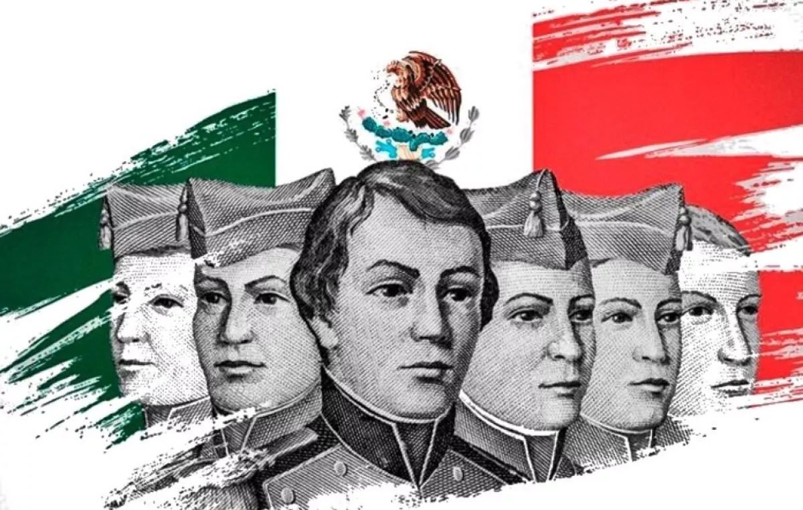
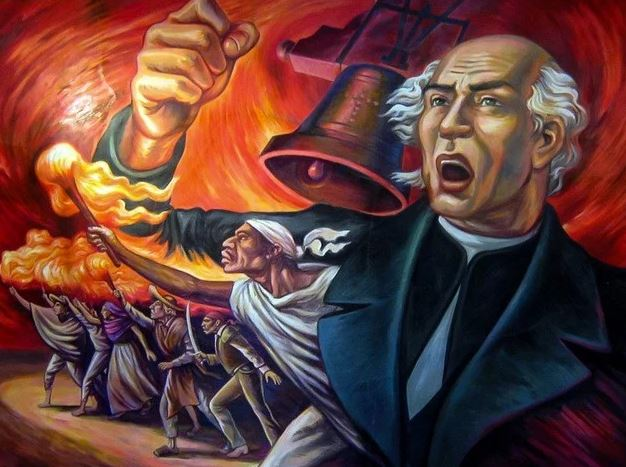
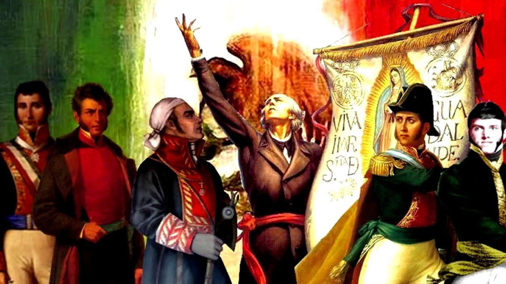
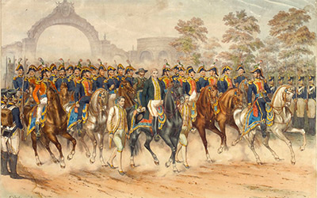

Septiembre es considerado el Mes Patrio en México principalmente porque en este mes coinciden los acontecimientos históricos definitivos que dieron origen y libertad a la nación, abarcando desde el inicio de la lucha armada hasta la firma de la independencia formal.
Datos curiosos yMitos

13 de septiembre1847

15 de septiembre1810

16 de septiembre1810

27 de septiembre1821